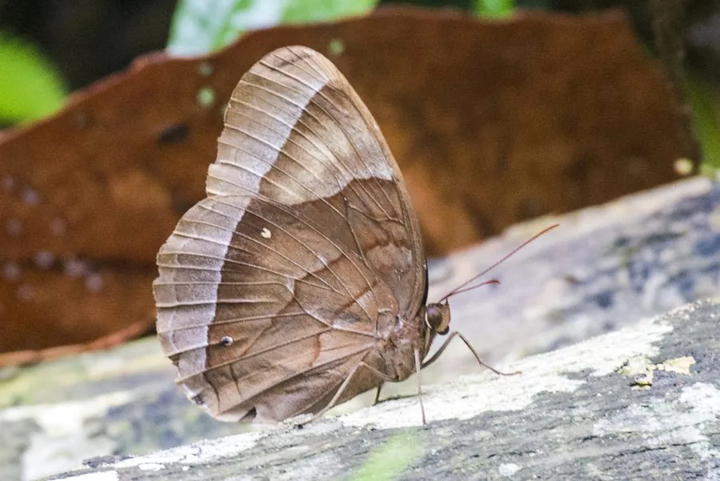

昆虫 · 动物界
紫斑环蝶 Thaumantis diores

翅膀中央有醒目的蓝紫色宽带、边缘暗褐的雨林蝴蝶，常在林下阴暗处贴地飞行，是环蝶类中色彩最华丽的种类之一。
- 分类
- 门节肢动物门纲昆虫纲目鳞翅目科蛱蝶科属环蝶属
- 栖息环境
- 热带雨林林下阴暗处，常沿林间小径活动，喜腐果和树汁
- 地理分布
- 东南亚热带雨林，包括泰国、马来西亚和印度尼西亚等地
- 保护级别
- 暂无评估
物种志
紫斑环蝶成虫翅展一般 8–11 cm。翅正面底色暗褐，前翅和后翅中央横贯宽阔的蓝紫色亮带，在阳光下呈现金属光泽；翅反面呈褐色，带有眼斑和横纹，停息时像一片带斑的枯叶。它的身体和翅膀都比较大，飞行时显得缓慢而飘忽。
紫斑环蝶分布于东南亚的热带雨林，包括泰国、马来西亚和印度尼西亚等地。它生活在林下阴暗处，常沿小径贴地飞行，喜欢在腐果、树汁和动物粪便上取食。幼虫取食棕榈科和禾本科植物，身体呈绿色或褐色，头部有明显的角状突起。环蝶类因体型大、花纹醒目而受到观赏蝴蝶爱好者的关注，部分种类也被人工饲养用于蝴蝶园展示。目前紫斑环蝶没有IUCN 的正式评估，也未列入中国国家重点保护野生动物名录。
形态与习性
- 食性成虫取食腐果、树汁和动物粪便，幼虫取食棕榈科和禾本科植物
- 翅展一般 8–11 cm
- 栖息环境热带雨林林下阴暗处，常沿小径贴地飞行
- 翅面特征翅中央有蓝紫色宽带，阳光下呈金属光泽
- 伪装翅反面呈褐色带眼斑，停息时像枯叶
- 习性飞行缓慢飘忽，喜在腐果和树汁上取食
趣味知识
- 紫斑环蝶的蓝紫色宽带在阳光下会呈现金属光泽。
- 它停息在枯叶间时，翅反面像一片带眼斑的落叶。
- 环蝶类的飞行缓慢而飘忽，常沿林下阴暗的小径贴地飞行。